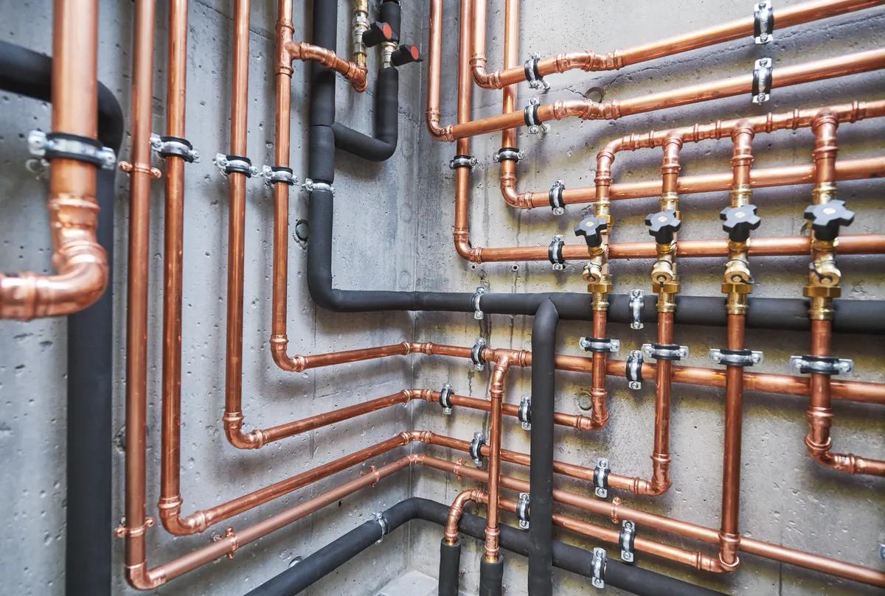

When you invest in new plumbing—whether it's a whole-house repipe, a major renovation, or new construction—you expect it to be reliable for decades. But even the best-laid pipes can have tiny, hidden flaws that can lead to costly water damage down the road.
That's why at Angle Stop Plumbing, we never skip a crucial step that gives us and you the ultimate peace of mind: the Air Test.
What is an Air Test in Plumbing?
The air test is a rigorous quality control procedure required by most building codes for newly installed drain, waste, and vent (DWV) systems. Unlike older, less reliable methods, the air test is designed to find even the smallest leaks before drywall goes up and fixtures are installed.

How Angle Stop Plumbing Performs the Test:
- Seal the System: We temporarily seal all open ends of the new piping system, including fixture inlets and the main drain connection.
- Pressurization: We introduce compressed air into the sealed system. The pressure is typically raised to a specific level, often between 3 to 5 pounds per square inch (psi), as required by local codes.
- Observation: We attach a pressure gauge and monitor the reading. The plumbing system must hold the required pressure for a specified period (usually 15 minutes to 1 hour).
- The Pass/Fail: If the gauge reading drops during the test period, it indicates a leak. If the pressure remains constant, the system has passed, and we can move forward with confidence!
Why is an Air Test Superior to a Water Test?
Many people assume a water test (filling the pipes with water) is enough. However, the air test offers key advantages that make it the gold standard for leak detection:
- Higher Sensitivity: Air molecules are much smaller than water molecules. This means air can escape through tiny pinholes or hairline cracks that water might not immediately reveal.
- Safety: Air is less messy and poses no flooding risk during the test itself, especially when testing upper-story plumbing.
- Positive Pressure: Air is forced out of the pipe system, which helps identify flaws at all joint points, whereas water pressure relies on gravity and may not reveal a small leak that only expands under dynamic conditions.
The Angle Stop Advantage: Minimizing Future Failures
When Angle Stop Plumbing performs a successful air test, we are effectively guaranteeing the integrity of your new installation. This meticulous process minimizes the risk of future failures by:
- Catching Manufacturing Defects: We can identify defective fittings or pipes that may have been cracked during transport or installation.
- Verifying Our Work: It confirms that every single joint, connection, and seal made by our plumbers is secure and water-tight.
- Preventing Costly Repairs: Finding a $5 leak now (by re-sealing a joint) saves you from a $5,000 damage repair bill years later (by tearing out drywall, remediating mold, and replacing flooring).
When you choose Angle Stop Plumbing, you're not just getting new pipes; you're getting the assurance that your system has been tested and proven to last.